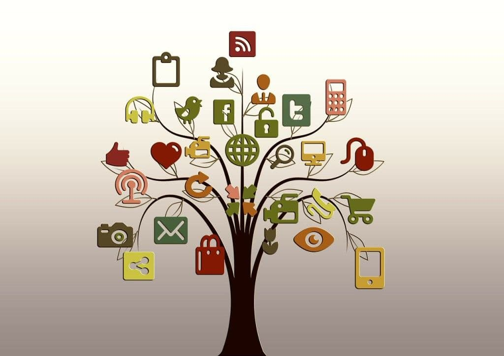

INTERNET BASICS

Introduction
The Internet is a global network comprised of smaller networks that are interconnected using standardized communication protocols. The Internet standards describe a framework known as the Internet protocol suite. This model divides methods into a layered system of protocols. It is a network of networks, that consists of millions of private, public, academic, business and government networks of local to global scope.
History
The history of the Internet has its origin from research and development in the United States and involved international collaboration, particularly with researchers in the United Kingdom and France.
- 1950 – Wide Area Networks
- 1960 – Packet switching network
- 1969 – ARPANET ( Advanced Research Projects Agency ) Defense research project -Root of Internet
- 1980 - Super computing center funded by National Science Foundation (NSF)
- 1982 – TCP/IP Formalized
- 1983 - Domain Name System
- 1988 – Open Systems Interconnection Model
- 1989 – Internet goes commercial by Internet Service Provider (ISP)
- 1989-90- World Wide Web (WWW) linking hypertext by Tim Berners Lee
- 1994 - Amazon.com ; Google January 1996
- 2000’s – Skype, Facebook,Youtube, Twitter, Dropbox,etc
People and Organization
No one person, company, organization or government runs the Internet. It is a globally distributed network comprising many voluntarily interconnected autonomous networks.
- ISOC is a voluntary membership organization whose purpose is to promote global information exchange through Internet technology.
- ISOC appoints the IAB- Internet Architecture Board. They meet regularly to review standards and allocate resources, like addresses.
- IETF- Internet Engineering Task Force. Another volunteer organization that meets regularly to discuss operational and technical problems.Internet services were launched in India on 15th August, 1995 by Videsh Sanchar Nigam Limited. In November, 1998, the Government opened up the sector for providing Internet services by private operators.
Layered Architicture
MODERN USES OF INTERNET
- The internet can be accessed almost anywhere by numerous means including mobile internet services.
- The Internet allows computer users to remotely access other computers and information stores easily, wherever they may be.
IP-TCP
IP Protocol
- A simple protocol for attempting to send data between two computers
- Each device has a 32-bit IP address written as four 8-bit numbers (0-255)
- Find out your internet IP address: whatismyip.com
- Find out your local IP address: in a terminal, type: ipconfig (Windows) or ifconfig (Mac/Linux)
Transmission Control Protocol (TCP)
- adds multiplexing, guaranteed message delivery on top of IP
- multiplexing: multiple programs using the same IP address
- port: a number given to each program or service
- port 80: web browser (port 443 for secure browsing)
- port 25: email
- port 22: ssh
- port 5190: AOL Instant Messenger
- more common ports
- some programs (games, streaming media programs) use simpler UDP protocol instead of TCP.
- UDP is faster than TCP, Connectionless, Unreliable communication and used for sending short messages
WWW - World wide web
World Wide Web
- The Web is a only way to access information through the Internet.
- The world wide web is a sophisticated system for universal information capture and delivery.
- The Web is a large number of computer documents or "Web pages" that are stored on computers around the world and are connected to one another using hyperlinks. These Web pages can be seen by anyone through their computer's "Web Browser," which is the program you are using now.
- A group of Web pages that follow the same theme and are connected together with hyperlinks is called a "Web site." Web sites and Web pages are written in a coding language that makes it possible to add pictures, sound and interactivity to plain old text, making people's reading experience more exciting
Web Server and Browsers
Web Servers
- A web server is a computer with special software to host web pages and web applications.
- A web server serves web pages to clients across the Internet or an Intranet. The web server hosts the pages, scripts, programs, and multimedia files and serves them using HTTP, a protocol designed to send files to web browsers and other protocols.
- A number of server-side technologies can be used to increase the power of the server beyond its ability to deliver standard HTML pages.
- These include CGI scripts, server-side includes, SSL security, and Active Server Pages(ASPs)
Web browsers
- Web browsers are programs used to explore the Internet. Software that creates a unique hypermedia-based menu on your computer screen and provides a graphical interface to the Web.
- There are many Web browser programs available including Netscape Navigator, Internet Explorer and Opera, Google Chrome, Mozilla Firefox.
Web Protocols
A protocol is simply a standard for enabling the connection, communication,and data transfer between two places on a network. Here are some of the keyprotocols that are used for transferring data across the Internet.
- HTTP : Hypertext Transfer Protocol. It is the standard protocol fortransferring web pages (and their content) across the Internet.
- HTTPS : Hypertext Transfer Protocol over Secure Socket Layer (SSL). For awebsite to use HTTPS it needs to have an SSL certificate installed on theserver. These are usually issued by a trusted 3rd party, referred to as aCertificate Authority (CA). When you browse a web page using HTTPS, youcan check the details of the SSL certificate. For example, you could check thevalidity of it.
- FTP : File Transfer Protocol. It is used to transfer files across the Internet.FTP is commonly used by web developers to publish updates to a website(i.e. to upload a new version of the website).
- Every HTTP request also uses TCP and IP. The Web is just one of theapplications built on top of the Internet protocols.
DNS - URL
DNS
- The domain name system (DNS) gives us humans an easy way to identify where we want to go on the Internet.
- Behind the scenes, each domain name maps to an IP address. When we type a URL in the address bar of our browser, the computer has to figure out its IP address.
- Consider the website: blog.gardeningknowhow.com
- That URL leads to the blog of a gardening tips & tricks website.
- First level domain – com
- Third level domain – blog
URL
A Uniform Resource Locator (URL), colloquially termed a web address, is a reference to a web resource that specifies its location on a computer network and a mechanism for retrieving it. A URL is a specific type of Uniform Resource Identifier (URI), although many people use the two terms interchangeably. URLs occur most commonly to reference web pages (http) but are also used for file transfer (ftp), email (mailto), database access (JDBC), and many other applications. Most web browsers display the URL of a web page above the page in an address bar. A typical URL could have the form http://www.example.com/index.html, which indicates a protocol (http), a hostname (www.example.com), and a file name (index.html).
Web standerds
Audience Requirements